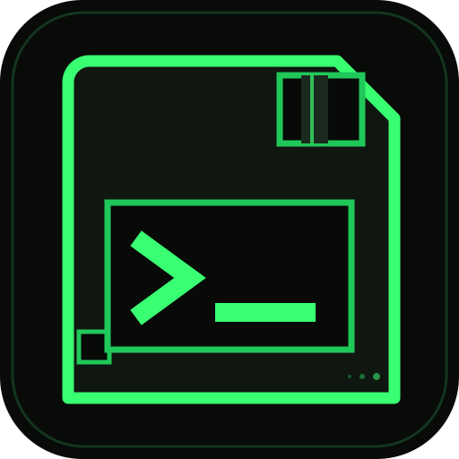

COFRETABS PRIVACY POLICY
The short version: CofreTabs saves tabs in your browser's local IndexedDB storage. There is no server, no account, no analytics, no telemetry, and no cloud sync. Your saved URLs, titles and notes are not transmitted anywhere by the extension.
1. What CofreTabs stores
When you explicitly press SAVE THIS TAB, CofreTabs stores the following on your device:
- The page title and full URL you chose to save.
- The page hostname and the automatically assigned website folder.
- The time the tab was saved, and when it was last changed.
- An inline favicon image only when the browser provides one as a local
data:image. - A note and folder assignment if you edit a saved tab yourself.
- A trash state if you move an entry to the trash.
Data is stored with the browser's IndexedDB facility inside your browser profile. It is not placed in a folder you select, and its location is controlled by your browser. Uninstalling the extension or clearing extension data may remove it. Export a backup if you want to keep a copy.
2. What CofreTabs does not do
- No account, sign-in, email address or API key is required.
- No analytics, telemetry, crash reporting, advertising or tracking pixels.
- No remote AI or third-party service receives your data.
- No browsing history, cookies, clipboard contents or form data are read.
- No saved page, title, URL, note or backup is uploaded by the extension.
- No remote scripts, fonts or stylesheets are loaded.
- No saved text is executed as HTML or JavaScript.
3. Permissions and why they exist
-
activeTab— grants temporary access to the tab you are on only after you click the CofreTabs toolbar icon. It lets the panel read the current page's title, URL and (if available) inline favicon, and lets CofreTabs open the panel there. -
scripting— used to inject the CofreTabs panel into the current page when you ask for it. The panel is not injected into pages automatically or on every page.
CofreTabs does not request host permissions, background access to all websites, history, cookies, downloads, clipboard or native messaging access.
4. Backups
Export creates a plain JSON file on your device using the browser's normal download behaviour. That file is not encrypted. Store it somewhere you trust. Import reads a file you choose and processes it locally; nothing is uploaded. CofreTabs never writes backups to a folder of its own choosing.
5. Favicons and network requests
To avoid leaking browsing activity, CofreTabs never fetches favicons from a website. It displays an inline favicon only when the browser already provides one as a local data URL; otherwise it shows a letter monogram. The extension performs no network requests at runtime.
6. Website folders and the Public Suffix List
Folder classification uses a bundled snapshot of the Public Suffix List (ICANN section), licensed under the Mozilla Public License 2.0. It is data included in the package and is not downloaded at runtime. Website names for common sites are a small built-in map.
7. Other software on your computer
Like any browser extension, CofreTabs runs inside your browser. Other extensions, browser sync features, operating-system backups, or someone with access to your browser profile may be able to read local extension data. CofreTabs cannot control those third parties. If you need stronger protection, use a separate browser profile and full-disk encryption.
8. Data control and deletion
- Move a tab to Trash to hide it from the active vault.
- Delete forever or empty the Trash to remove entries from IndexedDB.
- Export a backup before clearing browser data if you want to keep your library.
- Uninstalling the extension removes its extension storage according to browser behaviour.
9. Children and sensitive data
CofreTabs is a general-purpose bookmarking utility. It is not designed for storing passwords, payment card numbers, health records or other highly sensitive information. If you save a URL containing secrets, those secrets become part of your local library and any backups you export.
10. Changes and contact
Material changes to this policy will be documented in the repository and in release notes. This policy describes extension version 1.1.0. Questions and privacy reports can be raised through the public GitHub issue tracker at github.com/MadalinWolf. Do not include personal browsing data in a public issue.